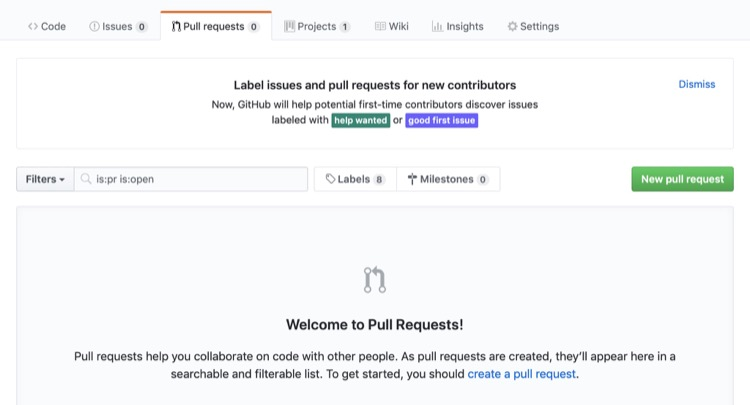

Configuring the system
As a collaborator you will want to utilise the same approach I use when authoring content, here you can find some information on how to prepare and configure the necessary tools.
In order to author you need three things in your computer;
- Brew
- This is a software package manager
- Hugo
- This is the web engine or more precisely, the static wedbsite generator
- GitHub
- The remote repository where the book is hosted and managed.
Install Brew on Mac OSX
We first need to install Brew which is a package manager and will allow you to configure your mac in a comfortable way, it is really cool actually.
/usr/bin/ruby -e "$(curl -fsSL https://raw.githubusercontent.com/Homebrew/install/master/install)"For more information have a look at Brew
Install Hugo on Mac OSX
The Houdini Guides uses Hugo which is a static web page generator, a kind of clever conversion from markdown to html which renders websites that are very light and fast becuase they don’t use databases, only front-end stuff.
Please read this as well Installing Hugo
Let’s install Hugo like this…
brew install hugoNow you will be able to run hugo and test your posts, for information have a look at Hugo
Configuring Git
The recommended approach is to fork the repository and do your chanes in there, once you are happy with your content to push it back to GitHub and do a Pull Request so I can merge your branch with the master one.
Create a GitHub account
You need to create a GitHub acocunt if you don’t have one already before proceeding, this is how.
If you don’t know GitHub I will strongly suggest you check the various GitHub Official Training Guides or other YouTube tutorials and online git books and onlinne gihub books which surely will help you, not only to collaborate but on your own projects.
How to fork a repository
The best thing to do is to go to the (GitHub help pages](https://help.github.com/en/articles/fork-a-repo) on how to fork a repository and the cloning proces.
> git clone https://github.com/<YOUR-GITHUB-USERNAME>/houdini-guidesNow you will have a clone of your own version of the houdini-guides in your local drive, you can do whatever you want here without fear or breaking anything at all.
Authoring workflow
Create a new post
Create new posts using the correct structure is not hard, just have a look at the book structure that has been downloaded and you will see quite clearly how things are setup.
For example, to create a chapter on the animation part-2
> hugo new post book/part-2/animation/keyframing/index.mdWill create a chapter under the animation block and the indes.md is the document you need to add your text, images and what not.
Please check the markdown guid and the style guide to find more about it.
Publishing your changes
Once you are done with the content, double checked your grammar, typos and what not (I recommend using Grammarly for this), you can publish it to your GitHub repository like this
> git add --all
> git commit -m "New keyframing chapter under animation"
> git pushDoing a Pull Request
Now go to the original GitHub Houdinig Guides repository and click on Pull request;

Checking the merge
Please check the notes I may do on the pull request tab as I may need you to tweak things.
Keeping up to date
Once I have merged those many branch changes (including yours) onto the main one, you will want to sync it with yours to keep with the main oficial release.
 16 April 2019, 18:54 BST
16 April 2019, 18:54 BST
 Edit this page
Edit this page